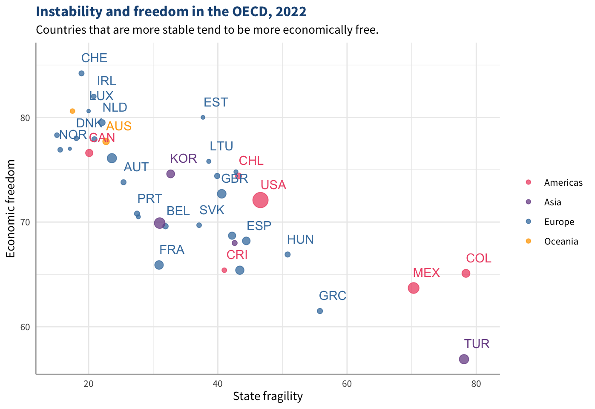
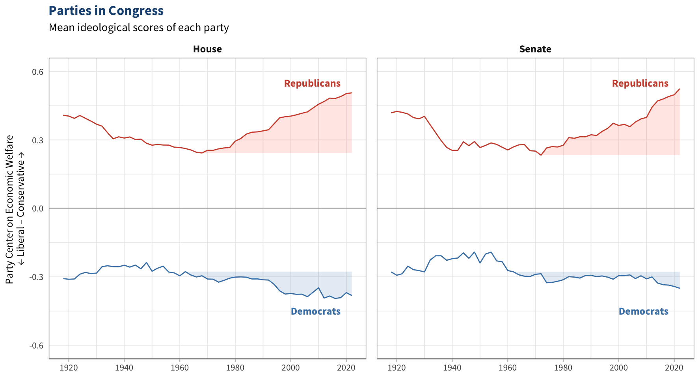
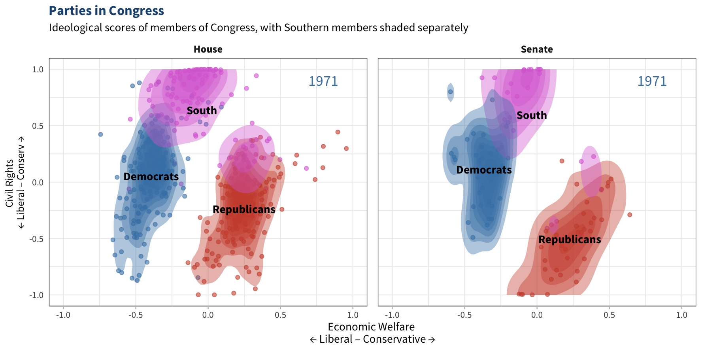

flowchart LR
A("Data visualization <br/>graphical representation <br/>of data")
B("Static <br/>still image, <br/>printer-friendly")
C("Dynamic <br/>changing image, <br/>best viewed on <br/>screens")
D("Interactive <br/>responds to user input <br/>(e.g., hovering or <br/>clicking on it)")
E("Animated <br/>changes over time <br/>(e.g., videos and GIFs)")
F("Interactive animation <br/>responds to user input<br/>and changes over time")
A --> B
A --> C
C --> D
C --> E
D --> F
E --> F
2 Presenting Research in the Twenty-First Century
A Primer on Dynamic Visualizations and Interactive Publications
Americans’ trust in scientists has been slowly declining for decades, and the COVID-19 pandemic only accelerated this decline.1 Out of all the academic disciplines, political science is naturally one of the most politicized—if not the most politicized—so it faces serious challenges at influencing public opinion. At the same time, the field’s knowledge is more valuable than ever now that democracy is so fragile.
It can be tempting to pin the blame of the disconnect between public opinion and science on the public: people only trust what they want to hear, so when science started saying things they didn’t like, they simply stopped trusting it. That is part of why the public has stopped listening to scientists, but it’s not the whole story. The main reason people have lost trust in science is that science hasn’t made itself easy to be trusted. Most scientific research is not designed to be read by the public; it costs money to access and is difficult for ordinary people to understand.
Some time ago, science didn’t necessarily need to be accessible to the public. If most people had faith that scientists were fair and honest authorities of the truth, then scientists didn’t really need to directly communicate their findings to the public. They could use language that only their colleagues, journalists, policymakers, and other stakeholders understand, and then those groups would pass on their findings to the public (Peters 2013). Nowadays, though, society is too polarized and science is too politicized to rely on this model. The public is more skeptical of information it hears in the media, and a large fraction has lost faith in science and the media altogether.
To this day, scientists usually struggle to explain their research with language and visuals that anyone can understand. Journalists are trained in this art, but unless they themselves have advanced degrees in the fields they report on, they can easily misinterpret research or take it out of context. News articles about science often report on a single study without really minding how it fits in with the rest of the literature, which can give readers the wrong idea about the state of scientific knowledge on the subject. Readers seeking to verify a news article’s reporting could try to find the original study or an academic literature review, but chances are they either won’t be able to access it or won’t be able to understand it. At that point, it’s hard to take experts at their word when there’s so much more compelling content saying not to.
Amid this information crisis, scholars in every field have been engaging more directly with the public and publishing research in more accessible outlets. Open-access journals and science blogs have risen dramatically in the last couple decades. Political scientists pump out public-facing content through a variety of mediums including academic blogs (such as Good Authority, formerly The Monkey Cage), opinion pieces on news websites, podcasts (such as Democracy Works), and social media accounts. But they could just be preaching to the choir on these platforms. Political science research rarely seems to have much of an effect on public opinion even with the field’s outreach efforts.
Consider the issue of term limits. In the 1990s and 2000s, many states started limiting the number of terms their legislators could serve, which led to a wave of research examining the effects of these reforms. Dozens of studies investigated a wide variety of outcomes with a wide variety of research designs. An unexpected pattern emerged nearly every time: term limits bring little benefit and cause serious side effects. When states pass term limits, politicians tend to become more loyal to their parties, elites hold stronger influence over policy, voter turnout decreases, and polarization deepens. (See the appendix at the end of this section for a brief literature review.) One of the only redeeming qualities is that term limits may lead to more diverse representation, but some research has found that they don’t. The vast majority of the literature suggests that term limits cause more problems than they solve. Research on this matter has mostly stalled in the last decade simply because there is not much left to study about it.
While political science has reached a general consensus on term limits, the public has nearly reached a consensus as well—in the opposite direction. By most accounts, more than 80% of Americans favor term limits on Congress (Kull 2023; McLaughlin and Associates 2021). Most people probably haven’t even heard about the research on term limits. This issue represents an extreme example of the discipline’s struggles to inform public opinion, but the problem rings true throughout nearly every issue domain. Open primaries are another hot topic on which popular attitudes are divorced from the literature, as Lee Drutman notes on X. Even people who are receptive to political scientists’ commentary may hold many beliefs that diverge from academic consensus not because they don’t trust it but because they are unaware of it.
It seems weird to me that reformers would prioritize non-partisan open primaries, the reform that democracy experts and political scientists consider the least valuable and most likely to cause more harm.
— Lee Drutman ⚙️🏛 (@leedrutman) January 24, 2024
But I'm just a political scientist
Story: https://t.co/bDi1zybxNb pic.twitter.com/4HbkWlRe0d
This chapter suggests that much of the disconnect between public opinion and academic scholarship is due to the fact that academia has not yet embraced modern norms for communicating information. Academic publications are designed to be printed, while most other industries now design their content primarily for screens. Journalists, think tanks, interest groups, politicians, and influencers are putting out rich, dynamic visualizations along with interactive editorials and captivating videos that pop with animated graphics, all of which help them show, not just tell, lessons from data. Meanwhile, most of the output from academic research is still in the form of PDFs and charts designed to fit in PDFs. The very people who should be at the cutting edge of telling stories with data are being held back by conventions from the 1900s.
Data visualizations flourished on social media during the COVID-19 pandemic and have become center-stage in the public discourse. In Section 2.1, I document several misleading visualizations that have gone viral and argue that scientists need to go viral as well to combat misinformation. Comments and articles debunking an inaccurate chart are no match for the original post. I show how interactive and animated visualizations enable authors to tailor their content to the public and their academic community simultaneously. Section 2.2 reviews several methods for producing these charts in R, with careful attention to making them accessible to both lay and expert readers. To demonstrate how researchers can use visualizations to engage with the public on social media, I posted a series of animated graphs on TikTok, which I reflect on in Section 2.3. Next, Section 2.4 explores other avenues for publishing fully interactive publications and outlines the strengths and weaknesses of this approach. The final section explores how academics can modernize their fields’ data visualization practices to help spread reliable, eye-catching content among the public.
Appendix: Why term limits don’t work
Limiting the number of terms that legislators can serve ensures that most of the politicians in office are relatively new to the job. The legislature becomes full of politicians who are less experienced, less competent, less well-known, and less powerful than legislatures with no term limits. Most newer legislators are only in office because of the party by their name, which puts them at the mercy of their party and their donors. If they want to win re-election even once, they have to do what the powers that be tell them to do, or they’ll be unseated.
Most politicians spend years building enough of a reputation, voter base, and personal donor base before they can afford to vote their conscience. Politicians with limited terms have to rise to fame more quickly if they want to stray from their party, which usually requires promoting sensational and extreme ideas. In sum, term limits make it easier for political and economic elites to control rank-and-file legislators, which pushes some to become more polarizing so they can escape elites’ hold on them.
When states implement term limits for their legislatures, we tend to see:
Party leaders and wealthy donors gain power. Term limits ensure that very few members of a legislature have served long enough to build their own independent voter bases and donor bases, so greater share of the legislature is dependent on powerful political actors if they want to win re-election or seek higher office (Masket and Shor 2015).
Polarization increases. Because party leaders and partisan donors have more leverage over rank-and-file members, the parties become more polarized and bipartisanship declines (Olson and Rogowski 2020; Sarbaugh-Thompson et al. 2006).
Lawmakers become less competent. When a legislature has term limits, its members overall are less familiar with the legislative process, less knowledgeable of policy issues, and less skilled at passing good quality legislation (Burns et al. 2008).
Lobbyists for special interests become more influential. Legislators with less experience and competence rely more on lobbyists to inform their votes (Moncrief and Thompson 2001).
Governors become more powerful. Executive branches have more institutional expertise at their disposal—career bureaucrats, political operatives, and policy experts—giving governors the upper hand at politicking against legislatures with high turnover and low competence (Carey et al. 2006).
Oversight of the bureaucracy declines. Term-limited legislatures have less experience holding government agencies accountable and place a lower priority on it (Sarbaugh-Thompson et al. 2010).
Lawmakers slack on their responsibilities. Politicians who know they are in their last term tend to be less productive, work on less legislation, and are absent from meetings more—especially if they plan on seeking a higher office in the next election cycle since they have to size up their campaigning operations. If a legislature has a limit of four terms, then an entire quarter of the legislature may be in their lame duck term, whereas legislatures with no term limits have very few members who are not seeking reelection (Fouirnaies 2018).
Lawmakers spend more time fundraising. Legislators who are newer to the job have to spend more time fundraising than legislators who are more established. This means the average member of a term-limited legislature spends less time at events with ordinary constituents and more time at events with wealthier donors (VanDusky-Allen 2014).
Voter turnout decreases. Partisanship in general alienates potential voters and decreases voter turnout, so the increased partisanship that comes with term limits can dampen voter turnout even more. Plus, longer-serving politicians with more name recognition and campaign experience tend to be more effective at driving up turnout, and term-limited legislatures have fewer of these politicians (Nalder 2007).
Gerrymandering worsens. Districts become more oddly shaped to favor the majority party, mainly because of the increased power of parties in the legislature. Legislators who are close to their term limit also have an incentive to make sure their state senate’s districts or their congressional districts are favorable to their party so they can jump to a different chamber in the next election (Schaffner, Wagner, and Winburn 2004).
Representation doesn’t usually improve. Some studies have found cases when women and minorities were slightly more likely to hold office after their states adopted term limits, but most research fails to find a significant effect of term limits on descriptive representation (Caress et al. 2003; Carey et al. 2006; Carroll and Jenkins 2001; Pettey 2017; Schraufnagel and Halperin 2006).
Keep in mind that these findings only apply to term limits for legislatures (e.g., Congress and state legislatures). Term limits on presidents, governors, and judges are important safeguards for democracy. Executive and judicial officials each have more unilateral power, which is not safe in the hands of a single person for a long period of time. Legislators’ power is already constrained by the fact that each one has very little power on their own, so term limits have a different effect on them than on other officials.
2.1 A graph is worth 10,000 words
In September 2023, the TikTok user @thebeautyofdata posted an animated chart that quickly went viral. The chart shows median rent prices skyrocketing over the last four decades while household incomes only rose slowly. At the beginning of the video, the chart is zoomed into the late 1980s, and it zooms out over the course of a minute to show the staggering divergence by the 2020s. The slow reveal of the climbing lines creates a sense of mystery that entices the viewer to keep watching. As it plays, viewers are treated to a club remix of a 2005 pop song encouraging them to dance freely. The chart could have been displayed as a simple static graph, but the animation adds a whole new dimension while the music adds energy. It’s attention-grabbing and powerful, garnering the video more than 10 million views and nearly a million likes within a few weeks of posting—and that’s just the original post. It went viral on other accounts and other platforms as well, so it’s hard to know how many people it reached.2
There’s just one problem: the chart paints a completely misleading picture. Many economists pointed out that the household income data were adjusted for inflation while the rent data were not, despite the chart’s claim that both were adjusted. Plus, the rent data are based on the 40th percentile of rents, not the median, although these are probably correlated.3 When fixing the graph, one can see that rents and incomes have risen together at a similar rate. On X (formerly Twitter), where several users shared the video and reached almost as big of an audience as the original video on TikTok, some of the posts are flagged with community notes explaining the issue.4 TikTok gives no indication that the video is misleading, and experts’ replies are drowned out in the comments section. The original video and re-posts on TikTok have altogether received around 70 times as many views as the response videos pointing out the error (the most popular of which is shown in Figure 2.1). See the appendix below for details of this estimate.
Appendix: How many people did the video and its critics reach on TikTok?
While it’s impossible to know exactly how many people saw a video, the view count gives a general idea of the relative reach of each video. The chart got around 30 million views on TikTok as of November 14, 2023:
- The original video had 9.5 million views
- A re-post had 20 million views
- Many other re-posts had smaller view counts
The response videos pointing out the error received around 425,000 views:
- The video featured in Figure 2.1 had 270,000 views
- The next most popular video had 150,000 views,
- One video had 7,000 views
- The only other videos I could find (3) totaled around 1200 views
The original video and re-posts garnered more than 70 times as many views as the response videos. This is the best estimate of the relative reach of the chart and its critics, but it is a very rough estimate. We don’t know how many individual people actually saw these videos for many reasons:
- Re-posts could have been deleted before I found them (especially if a user who re-posted the video realized it was misleading)
- Re-watching a video adds to its view count
- Some viewers may have seen both the original video and a re-post
- Quickly scrolling past a video still adds to its view count even if the viewer doesn’t pay attention to it (which would affect the response videos more than the original video because they’re boring)
- Some viewers could have shown the video to a group of people around them
- There could be other re-posts that I couldn’t find or didn’t have access to (e.g., private videos or videos posted in other countries that are disconnected from TikTok in the US)
- Bots could inflate view counts
Finally, note that the video went viral on other platforms as well. By my count, X posts sharing the video got a total of 8 million views at the time of writing. Across all platforms, I count around 40 million views.
A few years earlier, a similar (but not as extreme) controversy arose when journalist David Leonhardt posted an animated chart on Twitter based on an interactive visualization he published in the New York Times. The chart, which went viral on many platforms, shows that the tax system was significantly more progressive in the 1950s and that the richest earners now pay a lower percent of their income than the poorest earners. To Leonhardt’s credit, the chart has exemplary design and uses data from a reputable source: acclaimed economists Emmanuel Saez and Gabriel Zucman. However, a heated debate had already been ensuing within economics over whether their measures are valid, and many experts argue that the data and the chart are inaccurate (Breunig 2019).
Many people seeing this graph might assume that it shows the official tax rates at each bracket, but it actually shows estimates of effective tax rates—taxes paid out of each household’s entire income, not just their taxable income. Saez and Zucman (2019) argue that wealthy Americans have been evading taxes more in recent years, so they adjusted high-income tax data to include their estimates of unreported income. This could make high earners’ effective tax rates appear lower than they really are. For poorer households, though, Saez and Zucman did not count most government assistance as income, which inflates their effective tax rates and makes these estimates inconsistent with the estimates for higher incomes. When using less subjective measures based on reported incomes, the tax rates appear much more linear.
Watch how radically taxes on the wealthy have fallen over the past 70 years:
— David Leonhardt (@DLeonhardt) October 7, 2019
(Full column: https://t.co/XP0a4Iljti) pic.twitter.com/dGxmOjQ1b5
If you take Piketty-Saez-Zucman DINA paper (https://t.co/mFIUKTI94Q), the closest we have to methodology for now editorialized figures (and the only peer-reviewed source), this is the evolution of average tax rates until 2014 (last year there)
— Wojtek Kopczuk 🇵🇱🇺🇦 (@wwwojtekk) October 11, 2019
h/t @jmhorp https://t.co/STcLn5eU9a pic.twitter.com/lyWggPw30I
Maybe tax evasion should be counted, or maybe it shouldn’t be—I’m not an economist—and regardless, these charts could end up influencing people’s attitudes on economic policy in a positive direction. But if even experts don’t agree on the accuracy of a chart’s data, then anyone seeing it needs to know that. Leonhardt’s chart doesn’t mention that it uses effective tax rates accounting for tax evasion (or perhaps that’s what “total tax rate” means, but most people wouldn’t know that), nor does the chart give any indication that the jury is still out on whether this is the right way to measure this concept. Without context, the chart gives the impression that it represents objective facts, when it may be based on an outlier study that is not representative of the state of the literature.
These episodes reflect a common trend in the age of social media: a single data visualization can influence millions of people much more easily than a blog post, a journal article, or even an entire literature. At present, scientists are generally not the ones making viral visualizations. They’re still playing catch-up while influencers spread amateur personal research and journalists misrepresent academic research. Once a misleading chart goes viral, responses usually only reach a small subset of the people who have seen it. Experts should still make an effort to debunk misinformation, but they also need a more proactive strategy for spreading accurate information in the first place.
2.1.1 What the pandemic taught us about data visualizations
During the COVID-19 pandemic, data visualizations became the primary ammunition in the information war between medical experts and skeptics. Dashboards made by researchers, journalists, and government agencies (such as the ones linked below) went viral, and many screenshots from those dashboards went viral as well. The interactivity of these visualizations turned out to be a double-edged sword: while they provided enormous amounts of information that helped experts convey problems and solutions, they could also be configured to give misleading conclusions that appear to be backed by science.
A team of researchers at MIT led by Crystal Lee (2021) collected tweets with COVID-related visualizations from more than 400,000 users. In addition to reporting their findings in a journal article, they set up a public-facing interactive article with a data dashboard displaying many of the tweets from their sample. Their analysis found that opponents of public health measures were “prolific and skilled purveyors of data visualizations” (2021, 15), often making charts that were “indistinguishable” from charts made by professionals (Ackerman 2021). Science skeptics value personal validation of information over blindly accepting scientific charts. When skeptics saw a graph they didn’t trust, they would often use the same dashboard or data to make their own versions suggesting very different conclusions.
Figure 2.3 shows an example of this. Charts like the first one were widely shared by supporters of public health measures because they showed that European countries, which had tighter restrictions, were much more effectively containing the spread of the virus than the US. The second one is a user’s original work attempting to show that European countries were not any better off than the US.5 The discrepancy between the graphs is the result of different definitions of Europe. The first graph only counts EU countries, while the second one counts the UK, Russia, and other non-EU countries. These countries had higher infection rates than most EU countries, probably because their public health measures were more similar to those of the US. Furthermore, the charts both show the number of cases, not a per-capita rate (even though the EU alone has 100 million more people than the US, not even counting the UK or Russia), so adding more countries naturally increases the case count.6
Show this chart to whomever tells you that Trump did a good job handling the Covid19 pandemic. pic.twitter.com/3NpSEApSBo
— The Lampoon Ledger (@ALampoonLedger) June 19, 2020
I am suddenly very curious with where that "COVID cases, US vs Europe" chart comes from since I graphed the Johns Hopkins data and it looks like this pic.twitter.com/UKI9AXg5h1
— PoIiMath (@politicalmath) July 3, 2020
Although the rise of misleading amateur research presents new challenges for scientists, there is a silver lining: demand is higher than ever for data-driven content on social media. The key, though, is that science skeptics do not want to simply consume this content. They want to participate in the process by producing content themselves, discussing it, critiquing it, replicating it, and verifying it—all elements of the traditional peer review process—and they only trust this process if they can do it themselves. As Lee and her team write (2021, 15):
While academic science is traditionally a system for producing knowledge within a laboratory, validating it through peer review, and sharing results within subsidiary communities, anti-maskers reject this hierarchical social model. They espouse a vision of science that is radically egalitarian and individualist. This study forces us to see that coronavirus skeptics champion science as a personal practice that prizes rationality and autonomy; for them, it is not a body of knowledge certified by an institution of experts.
A whole new ecosystem of science is developing, almost completely cutoff from mainstream science. It is democratic, open to anyone, and transparent. Its knowledge base is housed on social media platforms rather than in journals and books. The primary products of its work are data visualizations rather than written publications. It has a peer review process of sorts that relies on public comments and community moderators rather than anonymous reviewers and elite editors. In theory, this egalitarian model of science has many admirable qualities which could resolve a fair amount of issues that academics themselves have raised with the status quo of academia.
The problem is that most of the people in this ecosystem have no idea what they’re talking about. They don’t realize how uninformed they are because they only trust information they can verify themselves, and most scientific research is too advanced for untrained observers to verify. When outsiders try to fact-check misinformation in this ecosystem by citing mainstream science and using technical language, people in this ecosystem often become even more convinced of their beliefs (Nyhan, Reifler, and Ubel 2013; Reinero et al. 2023).
The MIT researchers offer two suggestions for combating misinformation in this ecosystem. The first is that researchers should “grapple with the social and political dimensions of visualizations at the beginning, rather than the end, of projects” (2021, 15). In other words, producing effective data visualizations for public consumption should be a higher priority in academic research. Second, researchers need to be clear about the uncertainty of their findings. All of science is built on an understanding that its knowledge is never certain, but scientists sometimes exaggerate their confidence in a claim or simply fail to note that it could be wrong. In sum, the team argues (2021, 15):
Convincing anti-maskers to support public health measures in the age of COVID-19 will require more than “better” visualizations, data literacy campaigns, or increased public access to data. Rather, it requires a sustained engagement with the social world of visualizations and the people who make or interpret them.
These lessons apply to much more than COVID-19 issues. The pandemic cultivated this emerging ecosystem of amateur science, but it isn’t going away. The MIT team’s comment that “better” visualizations are not enough to combat misinformation should not be taken to mean that sharing visualizations is a futile endeavor for academics; on the contrary, the study suggests that it may be necessary but not sufficient to change minds in this ecosystem. The only way to reach people in the ecosystem is to infiltrate it and play the game their way. References to well-known scientists or paywalled jargony articles or academic consensus mean very little to them; they want practical graphs, raw data, plain language, dialogue in the comments, and openness to their critiques.
While 10,000-word journal articles are quintessential tools for sharing knowledge among academics, data visualizations are the main mediums for sharing knowledge with lay audiences. The latter is arguably more important now than the former since misinformation is engulfing the public discourse. A well-designed graph posted on social media can have a far bigger impact on public opinion, policy, and society than a long-winded publication that may only be read by a handful of academics who already agree with the author.
2.1.2 Advantages of dynamic visualizations
Academic researchers are not faced with a binary choice of catering their content to either academia or the public. The widely used COVID-19 dashboards by Johns Hopkins and other institutions are prime examples of content that serves both academics and lay users at the same time. As I argue in this section, interactive and animated data visualizations are particularly powerful for communicating information to many different audiences simultaneously.
But first, let’s clarify some definitions. A data visualization is any figure that displays data graphically. Most visualizations published in academic research are static—they are still images that do not change. Static visualizations can fit into PDFs and are printer-friendly. Online outlets can also publish visualizations that are dynamic, meaning they can change over time or when a user hovers on it, clicks on it, or provides some other kind of input. Videos and animations could be considered interactive because users can play, pause, or advance to a certain point, but in this dissertation interactive refers only to content with more direct interactivity. I use the word dynamic as an umbrella term referring to both interactive and animated content. Figure 2.4 lays out a simple way of conceptualizing several types of visualizations.
Types of data visualizations
Below, I identify six main benefits that dynamic visualizations have over static, printer-friendly charts. The first three generally describe how dynamic charts help researchers convey information to the public while the last three relate more to researchers conveying information among themselves.
Accessibility. An interactive chart can convey however much information a reader wants to get out of it. A layperson can glance at the default configuration and learn something from it; a person with moderate expertise can try out different configurations to learn general patterns; an expert can look more closely at the numbers to discover complex patterns. While static charts often have to be designed for a more limited target audience, interactive charts are more flexible for a wider ranger of readers.
Readability. Dynamic charts can include many features that make them easier to read than static graphs. Because dynamic charts are designed to be read on screens rather than in print, they can use more color to distinguish series (as opposed to line dashing or shapes). In addition, interactive charts can help readers inspect individual data points by providing more information when hovering over them and showing special gridlines that follow the mouse. These charts can also let readers hide or isolate individual series, zoom in to a shorter timespan, change the text size, swap the color scheme, and expand the chart to a larger size.
Effectiveness. Graphics that are optimized for screens by making use of colors, interactivity, and animations are more aesthetically pleasing, which helps them capture the attention of a wider audience. Studies have found that people pay more attention to aesthetically pleasing visualizations, understand the information more accurately, and are more easily persuaded compared to less engaging visualizations (Cawthon and Moere 2007; Pandey et al. 2014).
Methodological support. Data visualization is an important component of exploratory data analysis; researchers must understand the distributions and relationships among their variables in order to make the appropriate choices for modeling the data. For large datasets, it is sometimes easier to build an interactive data dashboard that can quickly generate charts rather than painstakingly creating a series of individual charts. Hullman and Gelman (2021) argue that interactive exploratory visualizations are not only useful but essential for certain tasks like Bayesian analysis.
Reproducibility. Replication data can be easily downloaded from interactive charts. Most of the interactive charts in this dissertation have a menu button in the upper-right corner which includes several options for downloading or viewing the raw data. Accessing the data for a particular graph takes many more steps when it is only available in a data repository or an author’s website. Plus, the tooltip boxes that appear as a reader hovers over a graph also display data values for quick investigation. In static figures, data labels can be displayed above each point, but this clutters the graph.
Transparency. Alternative measures for each concept in a graph can be included and hidden by default, letting readers examine robustness without the need for cluttered plots, multiple plots, or extensive appendices. This allows readers to critically examine the author’s choice of measures with the click of a button. The quick access to the data discussed in the previous paragraph makes the research even more transparent by reducing the steps needed to examine replication data.
Interactivity lets authors pack an order of magnitude more information in a chart compared to a static chart while making it accessible to an order of magnitude more readers. It broadens the audience that can read it, displays the information more effectively, and encourages researchers to be more open and clear about how they conducted their analysis. Likewise, animation adds energy and visual appeal to a chart, making it much more powerful.
2.2 Designing dynamic data visualizations
Researchers have many tools for creating dynamic graphs without needing technical skills beyond their basic training. For R users, adding interactivity or animation to a static graph is often as simple as adding a single line of code. In addition, programs such as Tableau have user-friendly interfaces for creating interactive visualizations. This section reviews R packages for producing interactive and animated visualizations. The focus is on R because many researchers already use R for data management, statistical analysis, and visualization. Two of the libraries discussed here also have sister libraries in other languages such as Python and JavaScript.
2.2.1 Interactive figures with plotly and highcharter
The two most common and powerful interactive graphing packages in R are plotly and highcharter. Plotly is a suite of libraries that produce interactive visualizations in various languages. Highcharts is a similar library based in JavaScript, and an independent developer created highcharter to translate R code into JavaScript code for Highcharts. In general, plotly is easier to use but highcharter plots are more customizeable and elegant. For most uses, I recommend using plotly due to its simplicity, but most of the interactive figures in this dissertation are produced with highcharter.
Both packages are user-friendly for anyone familiar with ggplot2, a widely used R package for data visualizations. plotly can turn any plot made with ggplot2 into an interactive chart with a single line of code. Users simply create a chart with ggplot() and then call the object in the ggplotly() function. While highcharter cannot convert ggplot2 graphs, the syntax is intuitive for users already familiar with ggplot2. Examples of code and charts produced by each of these packages are in Figure 2.5. The first tab shows a static chart produced in ggplot2, the second tab converts this into an interactive plotly chart, and the third tab produces an interactive highcharter chart.
Code
# Load package
library(ggplot2)
# Static chart
ggplot(oecd22, aes(x=fragility, y=econ, color=continent)) +
geom_point(aes(size=pop), alpha=.75) +
# Titles
labs(title="Instability and freedom in the OECD, 2022",
subtitle="Countries that are more stable tend to be more economically free.",
x="State fragility", y="Economic freedom", color=NULL) +
# Data labels
geom_text(aes(label=abb), nudge_x=2, nudge_y=1.5,
check_overlap=TRUE, show.legend=FALSE) +
# Legend
scale_color_manual(values=c("#ef5675", "#7a5195", "#447eae", "#ffa600")) +
guides(size=FALSE) +
# Formatting
theme_minimal() +
theme(text = element_text(family="Source Sans Pro"),
plot.title = element_text(hjust=0, color="#1b5283", face="bold", size=13),
strip.text = element_text(face="bold", size=10),
axis.line = element_line(color="#aaaaaa"))
Code
# Load packages
library(ggplot2)
library(plotly)
# Step 1: Static chart with ggplot2 (but without data labels)
plot1 = ggplot(oecd22, aes(x=fragility, y=econ, color=continent, label=country)) +
geom_point(aes(size=pop), alpha=.75) +
labs(title="Instability and freedom in the OECD, 2022",
x="State fragility", y="Economic freedom", color=NULL) +
scale_color_manual(values=c("#ef5675", "#7a5195", "#447eae", "#ffa600")) +
guides(size=FALSE) +
theme_minimal() +
theme(text = element_text(family="Source Sans Pro"),
plot.title = element_text(hjust=0, color="#1b5283", face="bold", size=13),
strip.text = element_text(face="bold", size=10),
axis.line = element_line(color="#aaaaaa"),
plot.margin = unit(c(0.5, 0, 0, 0), "inches"))
# Step 2: Make it interactive
ggplotly(plot1) %>%
# Add title/subtitle (plotly can't handle subtitles but this hack works)
layout(title = list(text = paste0(
"<b>Instability and freedom in the OECD, 2022</b><br>",
"<span style='color: #444444; font-size: .9em;'>",
"Countries that are more stable tend to be more economically free.</span>"
)))Code
# Load package
library(highcharter)
# Interactive plot
hchart(oecd22, hcaes(x=fragility, y=econ, size=pop, group=continent),
type="scatter") %>%
# Titles
hc_title(text="Instability and freedom in the OECD, 2022", align="left", margin=36,
style = list(color="#1b5283", fontWeight="bold", fontSize="19px", useHTML=TRUE)) %>%
hc_subtitle(text="Countries that are more stable tend to be more economically free.",
align="left", style = list(color="#black", fontSize="16px", useHTML=TRUE)) %>%
hc_xAxis(title=list(text="State fragility"), crosshair=TRUE) %>%
hc_yAxis(title=list(text="Economic freedom")) %>%
# Tooltips
hc_tooltip(
headerFormat = "<b>{point.key}</b><br>",
shared=TRUE, shadow=FALSE, borderRadius=4,
pointFormat=paste(
"<b>{point.country}</b><br>",
"Fragile states index: <b>{point.x}</b><br>",
"Index of economic freedom: <b>{point.y}</b><br>",
"Population: <b>{point.pop}</b>"
), style=list(fontSize=".85em")
) %>%
# Legend
hc_colors(c("#ef5675", "#7a5195", "#447eae", "#ffa600")) %>%
hc_legend(align="right", layout="vertical") %>%
# Formatting
hc_chart(style=list(fontSize="1em", fontFamily="Source Sans Pro"))ggplot2 (static), plotly (interactive, converted from the static ggplot2 chart), and highcharter (interactive). The charts display the Fund for Peace’s Fragile States Index and the Heritage Foundation’s Index of Economic Freedom for the 38 OECD nations as of 2022.Adding interactivity to a graph introduces a different set of design choices than you may be used to when making printable graphs. Below are several design principles that I followed when producing these charts and the other figures of this dissertation.
Display information about each observation in tooltips. A tooltip is a box that appears when a user hovers over something. In the examples above, the tooltips display the country, continent, population, and values of the independent and dependent variables. The static graph only shows the country abbreviation next to each point. Data labels like these are useful for static graphs, but they are not needed on interactive graphs as tooltips hold more information with less clutter.
Keep it simple by default. Complicated graphs can be daunting for some readers, so sticking with a minimalist design can make a graph more accessible to a wider audience. Luckily, interactivity allows for the best of both worlds, as unnecessary details and features can be hidden by default and displayed only when the user hovers or clicks on the graph. For example, the
highchartergraph in Figure 2.5 does not have vertical gridlines and instead displays a vertical line (called a crosshair) wherever the mouse is hovering. The main function of gridlines is to help the reader identify the value of each point along the axes. On interactive graphs, this is handled by tooltips and crosshairs, negating the need to complicate the graph with extra lines.Label variables with latent concepts and define their specific measures in tooltips. Most concepts in social science research are not directly observable, so we often use more directly measurable indicators to approximate abstract concepts. The specific metric is usually less important to lay readers and more important to scholars. In line with the previous principles of keeping graphs simple by default, the latent concept represented by each variable can be displayed in axis titles and legends, and users wanting more information about how the variable is measured can read the tooltip or caption.
Avoid technical language and details in larger text. People usually read larger text first and smaller text last, and they also tend to pay more attention to the larger text (Rello, Pielot, and Marcos 2016). When the title of a graph uses language that ordinary people don’t understand, it sends the message that they won’t be able to understand the graph itself, so they don’t even bother. When the title makes sense, people are more likely to pay attention to the rest of the graph.7 Experts are going to read the fine print anyway, so there’s no need to make the more prominent text confusing to lay readers. (The code for each chart in Figure 2.5 has examples of adjusting font sizes.)
The general idea is to design the default configuration of a chart for public consumption and leave more advanced details to tooltips, hidden elements, and captions. That way, a chart can be clear to both lay readers and scholars for their respective needs.
2.2.2 Interactive apps with shiny
While plotly and highcharter let users manipulate charts in many ways, more advanced interactivity requires packages such as shiny. A shiny web app can run R code in real time and update the output based on user input. The package has functions to add fields such as dropdown menus, textboxes, number sliders, checkboxes, and buttons. The author can then program graphs, tables, models, or other objects to respond accordingly. To clarify, shiny is not a data visualization package; it can be used in tandem with other packages like highcharter to create visualizations that can respond to more complex input. Common uses include data dashboards, teaching tools, statistical programs, and even boring games. Building shiny apps can be complicated, so check out the documentation or help books before getting started.
Code
# Countries to include
countries = c("Brazil", "Canada", "China", "Japan", "Mexico",
"Netherlands", "Russia", "Switzerland", "United Kingdom",
"United States of America")
# Subset data
dem2 = filter(dem, country_name %in% countries)
dem2a = filter(dem2, evntsize==2)
dem2b = filter(dem2, evntsize==1)
# Color scheme
dem_colors = c(colorize(1:9, c("#662549", "#f15c80", "#f7a35c", "#e4d354", "#90ed7d", "#2b908f", "#8085e9")), "steelblue")
# Initialize chart
hc1 = highchart()
# Loop through each country and add series
for (i in 1:length(countries)) {
hc1 = hc1 %>%
# Democracy line graph
hc_add_series(
filter(dem2, country_name==countries[i]), visible=(i==10),
'line', hcaes(x=date, y=electdem, group=country_name),
id=paste0("line", i),
marker = list(enabled=FALSE),
tooltip = list(
headerFormat="<b>{point.year}</b><br>",
pointFormat = paste0(bullet, "{point.country_name}:",
"<b>{point.electdem:.2f}</b><br>")
)
) %>%
# Constitution dots
hc_add_series(
filter(dem2a, country_name==countries[i]),
'scatter', color="red", linkedTo=paste0("line", i),
hcaes(x=date, y=electdem*event, group=country_name),
marker = list(symbol='circle', radius=7),
tooltip = list(
headerFormat="<b>{point.year}</b><br>",
pointFormat=paste("<b>{point.year}</b><br>", bullet,
" <b>New constitution</b>")
)
) %>%
# Amendment dots
hc_add_series(
filter(dem2b, country_name==countries[i]),
'scatter', color="gray", linkedTo=paste0("line", i),
hcaes(x=date, y=electdem*event, group=evnttype),
marker = list(symbol='circle'),
tooltip = list(
headerFormat="<b>{point.year}</b><br>",
pointFormat=paste("<b>{point.year}</b><br>", bullet,
" <b>Amendment</b>")
)
)
}
# Finish chart
hc1 %>%
# Chart structure
hc_xAxis(crosshair=TRUE) %>%
hc_yAxis(title=list(text = "Democracy index")) %>%
# Tooltip
hc_tooltip(headerFormat = "<b>{point.year}</b><br>",
shadow=FALSE,
borderRadius=0) %>%
# Labels and axes
hc_title(text=paste("<b>Free and fair elections in 10 countries</b>"),
align="left", margin=35,
style=list(color="#1b5283", useHTML=TRUE, fontSize="19px")) %>%
hc_subtitle(text="V-Dem's electoral democracy index", align="left",
style=list(color="#black", useHTML=TRUE, fontSize="16px")) %>%
# Formatting
hc_morse(scatter=TRUE) %>%
hc_colors(dem_colors) %>%
hc_legend(enabled=TRUE, align="right", layout="vertical")highcharter and a shiny app that uses a similar highcharter graph but allows for more user input. See Chapter 5 for details about the data and methodology of these graphs.The example in the second tab above updates the graph to show the country and measure selected by the user. It starts off with a long dataset at the country-year level with several different variables measuring democracy. It then automatically subsets the data to observations from the selected country and changes the \(y\)-axis variable to the selected measure. When a user clicks the “Random country” button, it runs a random number generator to pick a different country and then subsets the data to that country. This is a fairly simple example of a shiny app, but as mentioned before, the package is so powerful that people have used it to develop fully functional software that runs in a browser.
One challenge with using shiny apps is that they cannot be rendered directly in a full document produced in RStudio like most other graphics. They need a special kind of server that can run R code remotely. By far the most common outlet for hosting shiny apps is shinyapps.io, which users can upload apps to directly from RStudio. Apps can then be embedded into R Markdown or Quarto documents using iframes.
2.2.3 Animated figures with gganimate
Another tool in the modern toolkit is animated visualizations, which are especially useful for time series cross-sectional data. On most graphs with longitudinal data, time is represented by the \(x\)-axis. Line graphs are not as useful for data with many cases at many points in time. For example, suppose we wanted to visualize the ideology of each member in Congress over time. If we must use a static graph, we have a few options:
Aggregate the data into summary measures and plot them in a line graph (such as the first tab in Figure 2.7). We lose a lot of information with this approach, but the graph is simple and may be all that we need.
Show each member’s ideology as an individual series in a single plot or a grid of small panels each with a single line graph. Figures like this can be large and complicated but can help quickly compare different series.
Plot cross-sections of the data at one or more key time points (such as the second tab in Figure 2.7). This is useful for multidimensional data with relatively constant distributions over time. If the distributions change signficiantly over time, though, a cross-sectional graph’s utility is limited.
Static graphs are generally limited to showing two dimensions, either time and a single variable or two variables at one point in time. Animation adds another dimension to a graph, letting it display many variables at many points in time. The third tab of Figure 2.7 shows a graph (borrowed from my master’s thesis) exemplifies the multidimensionality of animations.
Code
#----- Prepare data for plotting -----#
shades = id_parties %>%
filter(year>1960) %>%
arrange(chamber, party, year) %>%
group_by(chamber, party) %>%
mutate(mod = ifelse(party=="Democrats", max(d1_x), min(d1_x)),
d1_x = ifelse(year<year[d1_x==mod], NA, d1_x))
#----- Plot -----#
ggplot(id_parties, aes(x=year+1, y=d1_x, color=party)) +
# Lines and ribbons
geom_hline(yintercept=0, color="gray") +
geom_line() +
geom_ribbon(data=filter(shades, party=="Republicans"),
aes(ymin=mod, ymax=d1_x, group=chamber),
fill="tomato", alpha=.15, size=0) +
geom_ribbon(data=filter(shades, party=="Democrats"),
aes(ymin=d1_x, ymax=mod),
fill="steelblue", alpha=.15, size=0) +
# Structure
facet_wrap(~chamber) +
# Labels
annotate(geom="text", label="Republicans", x=2018, y=.55, hjust=1,
size=3.5, family="Source Sans Pro", fontface="bold", color="tomato3") +
annotate(geom="text", label="Democrats", x=2018, y=-.45, hjust=1,
size=3.5, family="Source Sans Pro", fontface="bold", color="steelblue") +
labs(title="Parties in Congress",
subtitle="Mean ideological scores of each party",
x=NULL, y="Party Center on Economic Welfare \n\u2190 Liberal – Conservative \u2192", color=NULL, fill=NULL) +
# Scales
scale_y_continuous(limits=c(-.6,.6)) +
scale_x_continuous(breaks=seq(1920, 2020, 20)) +
scale_color_manual(values=c("steelblue", "tomato3")) +
scale_fill_manual(values=c("steelblue", "tomato3")) +
# Formatting
theme_morse() +
theme(legend.position="none",
panel.border = element_rect(fill=NA, color="gray25"),
panel.spacing = unit(10, "pt"),
axis.title.y = element_text(size=10),
axis.line.x = element_line(size=.4, color="gray"),
axis.ticks.x = element_line(size=.4, color="gray"),
panel.grid.major.x = element_line(size=.3),
panel.grid.minor.x = element_line(size=.3),
panel.grid.major.y = element_line(size=.3),
panel.grid.minor.y = element_line(size=.3))
Code
#----- Subset data to 1971 -----#
id_members71 = filter(id_members, year==1971)
id_factions71 = filter(id_factions, year==1971)
#----- Calculate slope of separation line -----#
lda_line = function(dim1, dim2, group) {
ld = MASS::lda(group ~ dim1 + dim2) # linear discriminant analysis
b1 = ld$scaling[1] # extract coefficients for dim1
b2 = ld$scaling[2] # extract coefficients for dim2
slope = -b1/b2 # calculate slope
angle1 = atan(slope) * 180/pi # convert to radians then degrees
angle2 = ifelse(angle1<0, 90+angle1, -90+angle1) # rescale for continuity
list(`b1`=b1, `b2`=b2, `slope`=slope, `angle`=angle2)
}
# Slopes for separation lines
lines = id_members71 %>%
group_by(year, chamber) %>%
summarise(
# Determine majority party
majority = getmode(party),
# Slope of separation line between parties
slope = lda_line(dim1, dim2, party)$slope,
angle = lda_line(dim1, dim2, party)$angle) %>%
arrange(chamber, year) %>%
ungroup()
#----- Cross-sectional plot -----#
ggplot(id_members71, aes(x=dim1, y=dim2)) +
# Dots and contours
geom_point(aes(group=icpsr, color=faction),
alpha=0.6, show.legend=FALSE) +
stat_density_2d(aes(fill=faction), geom="polygon", size=0, alpha=.4) +
# Year labels
geom_text(data=lines,
aes(label=as.character(year), color=majority, group=chamber),
x=.9, y=.9, hjust=1, show.legend = FALSE, check_overlap = TRUE,
family="Source Sans Pro", size=5) +
# Party name labels
geom_text(data=id_factions71, aes(x=d1_x, y=d2_x, group=faction, label=faction),
fontface="bold", color="black", family="Source Sans Pro",
check_overlap=TRUE) +
# Graph labels
labs(title="Parties in Congress",
subtitle=paste("Ideological scores of members of Congress,",
"with Southern members shaded separately"),
fill="", color="",
x="Economic Welfare \n\u2190 Liberal – Conservative \u2192",
y="Civil Rights \n\u2190 Liberal – Conserv \u2192") +
# Formatting
scale_color_manual(values=c("steelblue", "tomato3", "orchid")) +
scale_fill_manual(values=c("steelblue", "tomato3", "orchid")) +
scale_x_continuous(limits=c(-1,1)) +
scale_y_continuous(limits=c(-1,1)) +
facet_wrap(~chamber) +
theme_morse() +
theme(legend.position="none",
panel.border = element_rect(fill=NA, color="gray25"),
panel.spacing = unit(10, "pt"),
axis.title.y = element_text(size=10),
axis.line.x = element_line(size=.4, color="gray"),
axis.ticks.x = element_line(size=.4, color="gray"),
panel.grid.major.x = element_line(size=.3),
panel.grid.minor.x = element_line(size=.3),
panel.grid.major.y = element_line(size=.3),
panel.grid.minor.y = element_line(size=.3),
plot.background = element_rect(fill="white", color=NA))
Code
#----- Calculate slope of separation line -----#
lda_line = function(dim1, dim2, group) {
ld = MASS::lda(group ~ dim1 + dim2) # linear discriminant analysis
b1 = ld$scaling[1] # extract coefficients for dim1
b2 = ld$scaling[2] # extract coefficients for dim2
slope = -b1/b2 # calculate slope
angle1 = atan(slope) * 180/pi # convert to radians then degrees
angle2 = ifelse(angle1<0, 90+angle1, -90+angle1) # rescale for continuity
list(`b1`=b1, `b2`=b2, `slope`=slope, `angle`=angle2)
}
# Slopes for separation lines
lines = id_members %>%
group_by(year, chamber) %>%
summarise(
# Determine majority party
majority = getmode(party),
# Slope of separation line between parties
slope = lda_line(dim1, dim2, party)$slope,
angle = lda_line(dim1, dim2, party)$angle) %>%
arrange(chamber, year) %>%
ungroup()
#----- Animated plot -----#
anim_cong = ggplot(id_members, aes(x=dim1, y=dim2)) +
# Dots and contours
geom_point(aes(group=icpsr, color=faction),
alpha=0.6, show.legend=FALSE) +
stat_density_2d(aes(fill=faction), geom="polygon", size=0, alpha=.4) +
# Separation line
geom_abline(data=lines, aes(intercept=0, slope=angle),
size=0.5, alpha=0.5) +
# Year labels
geom_text(data=lines,
aes(label=as.character(year), color=majority, group=chamber),
x=.9, y=.9, hjust=1, show.legend = FALSE, check_overlap = TRUE,
family="Source Sans Pro", size=5) +
# Party name labels
geom_text(data=id_factions, aes(x=d1_x, y=d2_x, group=faction, label=faction),
fontface="bold", color="black", family="Source Sans Pro",
check_overlap=TRUE) +
# Graph labels
labs(title="Parties in Congress",
subtitle=paste("Ideological scores of members of Congress,",
"with Southern members shaded separately"),
fill="", color="",
x="Economic Welfare \n\u2190 Liberal – Conservative \u2192",
y="Civil Rights \n\u2190 Liberal – Conserv \u2192") +
# Formatting
scale_color_manual(values=c("steelblue", "tomato3", "orchid")) +
scale_fill_manual(values=c("steelblue", "tomato3", "orchid")) +
scale_x_continuous(limits=c(-1,1)) +
scale_y_continuous(limits=c(-1,1)) +
facet_wrap(~chamber) +
theme_morse() +
theme(legend.position="none",
panel.border = element_rect(fill=NA, color="gray25"),
panel.spacing = unit(10, "pt"),
axis.title.y = element_text(size=10),
axis.line.x = element_line(size=.4, color="gray"),
axis.ticks.x = element_line(size=.4, color="gray"),
panel.grid.major.x = element_line(size=.3),
panel.grid.minor.x = element_line(size=.3),
panel.grid.major.y = element_line(size=.3),
panel.grid.minor.y = element_line(size=.3),
plot.background = element_rect(fill="white", color=NA)) +
# Animation
transition_time(year) +
ease_aes('linear') + enter_grow() + exit_shrink()
#----- Display animation -----#
animate(anim_cong, nframes=150, fps=10, end_pause=5,
width=888, height=444, units="px", res=100)Animated graphs are simple to make in R for ggplot2 users.8 Similar to how plotly can turn a static ggplot2 graph into an interactive graph, the package gganimate can turn a static ggplot2 graph into an animated graph. To start off, users can create a static graph (like the one in the second tab of Figure 2.7) that plots the whole dataset all at once. This will usually be cluttered, so it may be useful to subset the data to a single point in time until this code is satisfactory. Then, gganimate functions can be added to the plot just like any other ggplot2 function. The function transition_time() specifies the name of the variable containing the time points, and other functions like ease_aes() and enter_grow() define which types of transitions should be used to make the graph move smoothly. By default, these functions produce a GIF, but video files can also be rendered using the animate() function. Finally, if we upload the animation to TikTok and set it to some sick beats, we could have a viral video on our hands.
Animation can be used in a wide variety of situations. An animated bar graph with bars growing, shrinking, and reordering as the chart loops through time is often a more user-friendly display of time-series cross-sectional data than a large grid of small panels with individual line graphs. Animated histograms and density plots can show how an entire distribution moves over time better than a single line graph plotting the mean and error bars. As the viral TikTok discussed in Section 2.1 shows, charts that don’t even need to be animated can benefit from animation. A static graph becomes much more interesting when it is slowly revealed over time.
2.2.4 Getting help with the Visualization Assistant for R
AI bots such as ChatGPT and Bing Chat have become popular resources for coding assistance, but they often struggle with advanced tasks. In November 2023, OpenAI announced that users can now build custom versions of ChatGPT that are fine-tuned for specific purposes. I created the Visualization Assistant for R, a GPT that specializes in producing animated and interactive graphs. The assistant can write code from scratch, modify code, find errors, and give the user a step-by-step guide for a specific task. I fed it advice from my own experience as well as vignettes and tutorials for ggplot2, gganimate, plotly, highcharter, and shiny. I also had it complete many tasks and uploaded transcripts of its successful responses to its knowledge base. Note that the bulk of the assistant’s ability is already built-in to ChatGPT, and I simply provided it with extra instructions, resources, and examples that improve the base model. This GPT is public and free for ChatGPT Plus members, although ChatGPT Plus requires a subscription.
Some examples of the uses for the bot are shown below on the right alongside the same prompts to ChatGPT Classic on the left. Both of these examples asked the bot to complete four main tasks: (1) add animation to a static ggplot2 graph, (2) make the original graph interactive, (3) try a different approach for making it interactive, and (4) change the design of the interactive graph. ChatGPT Classic struggled with all of these tasks except the second one, which was the simplest to complete. With the other tasks, it often gave incorrect information and produced code with errors. I went back and forth with it to get it to correct itself, and many times I had to directly tell it what it was doing wrong (which defeats the whole point of using ChatGPT as a coding resource). Meanwhile, the Visualization Assistant for R completed each of these tasks correctly and efficiently on the first try.
ChatGPT Classic vs. the Visualization Assistant for R
Comparing the performance of the base model and the custom GPT
Task 1: Add animation to a chart
Nathan Morse
ChatGPT Classic
Nathan Morse
ChatGPT Classic
Nathan Morse
ChatGPT Classic
Nathan Morse
ChatGPT Classic
Visualization Assistant for R
Task 2: Add interactivity to a chart
Nathan Morse
ChatGPT Classic
Visualization Assistant for R
Task 3: Another way to make the chart interactive
Nathan Morse
ChatGPT Classic
Nathan Morse
ChatGPT Classic
Visualization Assistant for R
Task 4: Change the design of an interactive chart
Nathan Morse
ChatGPT Classic
Nathan Morse
ChatGPT Classic
Nathan Morse
ChatGPT Classic
Nathan Morse
ChatGPT Classic
Visualization Assistant for R
Nathan Morse
Visualization Assistant for R
animate() functions, where I adjusted the resolution and speed of the animated graphs. Note that the actual graphs were not displayed in the original conversations since ChatGPT cannot run R code.Going forward, custom GPTs like this one would be a useful resource for methodologists to help other researchers learn how to use tools they have developed. Custom AI bots combine the strengths of large language models—providing information and assistance tailored to each person’s needs—while minimizing the weaknesses. Part of the reason AI bots struggle with advanced tasks in academic research is that most peer-reviewed publications are paywalled and were likely excluded from training data. Custom AI bots open the door to more advanced coding assistance. For example, when researchers develop a new statistical model, they often publish an article introducing the model and offering some applications, and they also release a package that can implement the model in R or another program. Nowadays, they could train a custom GPT on these materials within a few minutes, enabling users to generate personalized tutorials that are easier to navigate than methodological articles and more accurate than general AI bots.9
2.3 Sharing visualizations on social media
Inspired by the viral TikTok video discussed in Section 2.1, I started posting animated charts in a similar style on TikTok. Some videos were adapted from figures in this dissertation, and others use the same underlying data as a figure but in a different type of graph. The data sources, measurement choices, and other important details are discussed on a documentation webpage linked in my bio, along with the code used to produce the graphs. After uploading a video to TikTok, users can select a song to play in the background. This avoids copyright issues and encourages the app’s algorithm to show the video to more people. Below are selected videos from my TikTok account. Altogether these videos have received around 30,000 views and more than 700 likes, which is low for TikTok but not bad for the beginning stages of an account.
I generally picked trending songs to play in the background and tried to line up the music with the motion of the graph in some way. In the “Map of parties in American history,” rapper 310babii chants “left, right” for some reason, which conveniently mirrors the parties’ movement to the left and right in the chart. The rapper then starts repeating the phrase “fuck it up” as tensions escalate toward the Civil War, which indeed fucked things up. After the war, he returns to his “left, right” chant as the parties return to their normal patterns. In other videos, I made the graph dance to the music. The bar graphs showing rankings of countries over time are good examples of this. The bars move around and then pause with each beat (to the extent possible).10 In the “Free and fair elections” line graph, a small ensemble gently sets the tone as the US and Sweden gradually democratize until a full orchestra chimes in just as democracy spikes in the two countries from a wave of reforms in the early 1900s. It’s not clear how much these musical choices increased the videos’ engagement, but they likely helped at least a little.
Posting these videos on TikTok served as an exploratory field experiment of sorts. My goal was to both share information from my research and also learn how to design data visualizations for mass consumption. The videos with the farthest reach to date are “How the South switched sides” and the “Which party is more extreme?” graph. The comments on these videos were mostly negative—which was expected given the political nature of the content. Some comments simply disagreed with the chart or offered unhelpful critiques, but other comments were useful. Below, I outline several points that I gathered from these comments and the experience as a whole.
Avoid using words with different meanings in everyday and scholarly contexts. In “How the South switched sides,” I labeled the horizontal axis with the word liberal to mean left-wing, following a more colloquial definition of the word. Several commenters implied that I must be an amateur for not knowing what that term means. Technically, liberalism is a family of ideologies centered around capitalism and democracy, which both parties in the US generally fall under. Even so, American politics scholarship often employs the word liberal as a synonym for left-wing and recognizes it as a valid definition in the US context. In recent decades, though, as frustrations with capitalism have risen, many left-wing Americans have dissociated from the word liberal. The more formal definition is becoming recognized more by the public. Many leftists didn’t trust the graph because they didn’t agree with the terminology. Right-wingers didn’t seem to trust the graph either because they didn’t agree with the substance. It would have been better to label the axis with “economically left” and “right” so that more people could trust it.
Don’t post graphs that require thorough explanation to understand. Another issue with the “How the South switched sides” chart is that it appears to be a political compass, but DW-Nominate scores do not map on directly to a standard political compass with an economic left-right axis and a socially authoritarian-libertarian axis. The second dimension, graphed along the vertical axis, is particularly difficult to understand as it changes meaning and importance over time. Many commenters dismissed the graph’s credibility because they expected the Democratic Party to be in the lower left quadrant and the Republican Party to be in the upper right quadrant. On a global scale, as other commenters pointed out, both parties would be in or near the upper right quadrant, more like the graph in the “Which party is more extreme?” video. Although I gave several indicators that this is not a standard political compass, I should have made this clearer. If I really could not find a way to efficiently explain what DW-Nominate scores represent to a lay audience, then perhaps this graph should not have been posted on a platform geared toward mass consumption.
Understand that some people won’t trust your content no matter what you do. The “Which party is more extreme?” graph shows the ideological positions of major parties around the world, which were estimated with an algorithm that scanned party documents and identified patterns with minimal (but not zero) human bias. The subtitle was an attempt to summarize this, but it is not quite adequate. Commenters seemed to think that the ideological scores for each party were subjective ratings from someone’s personal judgment. Perhaps I should have worked harder to make the methodology clearer, but I doubt it would have made a difference. Most skeptics likely began with the assumption that the data were inaccurate because they did not conform to their preexisting beliefs, and then they came up with a critique. If I made the methodology clearer, it simply would have changed the critiques people gave, not their opinions. And that’s okay—videos do not need universal praise to be valuable.
Embrace controversy. Videos that are more controversial tend to reach more people since they invite more engagement from both critics and supporters. My most controversial video, not surprisingly, was the “Which party is more extreme?” graph. I intentionally titled it with a sensational question to grab people’s attention. The graph shows much more than just the relative extremity of the two major parties in the US, but framing the video around this question encouraged viewers to comment if they disagreed with the main idea of the graph. As long as people are furiously debating a video in the comments, the app’s algorithm will continue to show it to more viewers, helping it reach more people who do find value in it. By inviting controversy with a buzzworthy headline, my video has already gained nearly 14 times as many views as the journal webpage with the boring Political Analysis article introducing the methodology for the dataset used in the graph (Elff 2013).
But maybe don’t embrace controversy when first starting an account. TikTok briefly took down the “Which party is more extreme?” video at one point, presumably because several viewers reported the video for misinformation. These viewers probably just disagreed with the graph and didn’t want to believe that the methodology was sound. The app reinstated the video after I noted in an appeal that the data come from peer-reviewed studies cited in both the graph and the documentation webpage linked in my bio.11 Engagement on the next posts plummeted. I suspect that TikTok’s algorithm penalized my account for posting videos with reports of misinformation even though the moderators ultimately approved the main video in question. The dispute over this video likely would not have hurt my account so much if I already had a large following and many videos. Because it was only my third video, 33% of my posts at the time were flagged for misinformation (as far as I know). It’s hard to come back from that, so I may have already reached a dead end with this account.
In hindsight, I did not fully embrace two of the key suggestions made by Lee et al. (2021) for sharing visualizations on social media. First, I didn’t engage with the audience enough. I only occasionally responded to comments—mostly to answer clarification questions—since I had neither the time nor the energy to get into back-and-forth debates with random people on the Internet. I also did not reply to other users’ videos with my own response videos, known as “stiching” on TikTok, which is a common method for debunking misinformation. These practices, while tedious at times, are necessary for immersing oneself in the online information ecosystem (and for building a following). Second, my videos didn’t give any indication of uncertainty. In many cases, I could have included error bars on graphs or clarified in the caption that the metrics shown are rough estimates and not to be taken as precise or objective. I hope that my experience provides lessons on what to do and what not to do when posting visualizations on social media.
2.4 The power of interactive publications
Posting visualizations on social media platforms is the most direct way to share research to the public, but most platforms can only handle static images or videos of animated charts. To harness the full power of an interactive visualization, it has to be displayed in a webpage or app of some sort. A growing number of academic books (especially textbooks and methods guides) are now being published as interactive websites instead of or in addition to print versions. For example, one of the most popular resources for learning R, R for Data Science, is available as both a print textbook and a free web version produced by Hadley Wickham and his colleagues (2023) in RStudio.12 Web versions of print publications offer a number of advantages that are outlined in this section. However, they still don’t usually stray far from their print versions to keep their content consistent, so most of their visualizations are static.
Academics are only beginning to explore the possibilities of fully interactive content that is free of printability constraints. In January 2024, a team of political scientists at Harvard released an “interactive methods non-textbook” which takes the power of interactive publications to a new level (Ayers et al. 2024). Called 2K1-in-Silico, this hands-on web app lets users simulate data and examine how methodological choices affect results. It demonstrates that understanding the data-generating process of a phenomenon is critical for properly specifying a model. To learn the same lessons without this tool, students would generally need at least intermediate programming skills so they can run these simulations themselves or they’d have to read lengthy written material that may not resonate as effectively with them.
The app reminds me of a more elementary visualization titled “Hack Your Way To Scientific Glory,” which appeared in a FiveThirtyEight piece by Christie Aschwanden and Ritchie King (2015). The interactive graphic shows lay readers how easy it is for researchers to engage in “p-hacking,” the practice of deliberately configuring a model to produce a desired result. Users can play around with different ways of measuring political power and economic performance until a regression model reports that the party in power has a statistically significant effect on the economy. The catch, of course, is that the model can suggest that Democrats are better for the economy or Republicans are better for the economy or neither one does better, depending on the user’s choices. Again, the alternatives for demonstrating this point are to either describe it with words (which is not as compelling) or use a hands-on exercise that requires more technical expertise than the target audience has. These resources represent the state of the art of pedagogy, and they are only possible with interactive technology.
Most researchers already have the tools needed to produce interactive documents. RStudio, the most common software interface for R, comes with two built-in programs that can easily produce HTML files. The first is R Markdown. In RStudio, users can click the new document button in the upper-left corner and select either “R Notebook” or “R Markdown…” to begin. After writing text and code to produce figures or tables, clicking the “Knit” button will convert the file into an HTML webpage. Quarto is the next-generation version of R Markdown, offering more built-in features, user-friendly syntax, and the ability to run Python code in addition to R code. Just like R Markdown documents, a Quarto document can be created from the new document menu (as long as RStudio is up to date), and an HTML webpage is produced by clicking the “Render” button. These webpages can then be published to the internet on free platforms such as RPubs, Quarto Pub, or GitHub Pages. This way, authors can self-publish interactive articles or post online companions for print publications without the need for web development skills.
2.4.1 Advantages of interactive documents
I define an interactive document as a webpage or another format that can hold dynamic content, in contrast to a static document such as a printed publication or PDF. I use the term interactive publication to refer to an interactive document that is formally published or self-published as its final form. Interactive documents include R Markdown notebooks, HTML working papers, digital books such as this dissertation, data dashboards, web apps, blog posts, and web versions of journal articles. Interactive documents offer many benefits over static publications.
Accessibility. Webpages can include many features that make them easier to read and more accessible to a wider audience:
Text can be easily translated to easier reading levels or other languages by browser extensions or buttons included in the page.
Many webpages also include buttons for adjusting the text size, font, and color scheme to help readers with visual impairments.
Modern webpages are usually responsive to screen size, so they can fit phones and tablets without the need for back-and-forth horizontal scrolling.
Webpages can include interactive graphics, which lets them harness all the accessibility benefits mentioned in Section 2.1.2 as well.
Example of text that can be translated to a different reading level or language when the user clicks a button.
Un ejemplo de texto que se puede traducir a un nivel de lectura o idioma diferente cuando el usuario hace clic en un botón.
Interactivity. Webpages often feature many interactive tools that aid the reader’s experience, including:
The table of contents can include links that jump the user straight to any section.
Links can be included throughout the document, too, which jump the reader to figures (such as Figure 1.2) or sections (such as Section 2.1.2).
Webpages produced in R Markdown and Quarto are automatically set so that the reader can read a footnote upon hovering over its superscript number in the text,13 and full citations can be viewed by hovering or clicking on in-text citations (Wickham, Çetinkaya-Rundel, and Groleman 2023). Cited sources can then be viewed with a simple click.
Collapsible blocks can display supplementary content directly in the article rather than in appendices to minimize disruption to the flow of reading.
Dynamic visualizations such as interactive and animated charts bring all the advantages discussed in Section 2.1.2.
Example of collapsible content
Supplementary material can be displayed in collapsible boxes like this callout block instead of appendices at the end of the publication.
Reproducibility. HTML documents can include built-in replication code throughout the text. Authors can leave code hidden by default and enable readers to show any chunk of code by clicking a button.14 Code chunks can be placed wherever they are relevant—data preparation when the data sources are introduced, model fitting when the methods are described, and any coding for visualizations by each figure. Following this practice, any working paper with built-in code is a pedagogical resource with applied examples of methods that would interest many readers. A reader who is curious about which function an author used to achieve a task or how the author customized a plot can simply expand the relevant code chunk rather than obtaining separate replication files, which may not be publicly available or neatly laid out.
Code
x = "Example"
y = "collapsible"
z = "code."
print(paste(x, y, z))[1] "Example collapsible code."Transparency. Including collapsed replication code within interactive working papers and publications greatly increases the chances that the code will be seen by others. That, in turn, makes it easier for readers to spot errors, discourages p-hacking, encourages authors to keep their code user-friendly, and therefore improves accountability. Furthermore, web-based working papers can include interactive charts, bringing all the same transparency benefits discussed in Section 2.1.2.
Customizability. Authors often produce PDF versions of their working papers with LaTeX, which can be frustrating to learn for beginners. While programs like R Markdown and Quarto can generate PDFs using LaTeX and webpages using HTML and CSS, any advanced formatting beyond the default settings does require some basic knowledge of the respective markup languages. Simple tasks such as adjusting the font size of captions or the spacing between lines are clean and straightforward with CSS, whereas they often require packages with odd names and syntax in LaTeX. Reference guides are also much more common and user-friendly for HTML and CSS—a Google search for “html tutorial” returns 8 billion results while a search for “latex tutorial” returns a mere 43 million. Webpages are more powerful and easier to customize than LaTeX-generated PDFs.
Versatility. Webpages can be printed, but PDFs cannot be interactive. The fact that PDFs can only hold static content while webpages can hold both static and interactive content speaks further to the utility of interactive documents. Webpages can be printed and saved as PDFs, but PDFs cannot be turned into interactive webpages. Admittedly, the formatting of a webpage often becomes messed up when printed: content is sometimes cut off, the font size can be so large that a small article feels like a novel when printed, the font size can be too small to read, and in general it’s not a pleasant experience reading a printed webpage. To get around this, authors can include a properly formatted PDF version linked on a webpage.
2.4.2 Limitations of interactive documents
One of the clearest limitations of using interactive media to present academic scholarship is that it is not as permanent as print media. A variety of issues can arise that researchers must take into account when producing dynamic visualizations and publications.
Discontinued software. Interactive content is built on technology that is not guaranteed to work in the future. Adobe Flash Player, for example, was once a nearly universal plugin that powered games, animations, and other content for hundreds of millions of users. Despite its ubiquity in the 2000s, the software was retired in 2020, rendering all Flash content unusable unless it was manually converted to a newer format (Fiadotau 2020). Nowadays, the programming language JavaScript powers interactive content on 99% of the Internet—including the interactive graphs in this dissertation—but it could face a similar downfall in the future. Douglas Crockford, a prominent programmer who helped develop and popularize JavaScript, has warned that websites should stop using it and shift to more efficient languages. JavaScript content would probably still work long after it loses popularity because it isn’t proprietary software like Flash, but it could still run into problems eventually. Any software or package powering interactive content could someday become obsolete no matter how widely used it is, whereas static images and documents could last forever.
Lack of peer reviewed outlets for interactive content. Journals and book publishers usually only accept printable material, so dynamic content must be hosted on platforms where it is not subject to peer review.15 Authors could place dynamic content into an online appendix accompanying a print article, but supplementary material is not always verified by reviewers and is rarely accessed by readers. Publishing content in mass media outlets or personal websites could give the impression that it is not rigorous enough to pass peer review. These challenges make it difficult for dynamic media to gain legitimacy and attention from scientific communities.
Uncertain future of websites and platforms. Hosting content online rather than in print presents several challenges: first, even if the software powering the interactive content is supported far into the future, the website on which the material is hosted could be taken down anytime. Second, the individual page or document could be removed. Third, the URL could change, making it difficult for readers of the print article to access the online material. Unavailability of online supplementary materials is a common problem across disciplines, and over-reliance on it could make scientific research more difficult to access (Evangelou, Trikalinos, and Ioannidis 2005; Gertler and Bullock 2017; Schaffer and Jackson 2004; Williams 2016).
Lack of accountability over modifications after publication. Material hosted on a third-party website can be edited by the author without proper documentation. Authors could manipulate their work without updating the date of last modification to erase evidence of errors.16 Even if an author modifies online material with good intentions, failure to include previous versions or at least indicate that the material has been modified can confuse readers who are reading a publication that references an earlier version of the online material.17 Situations like these could erode trust both within the scientific community and between it and the public.
2.4.3 Recommendations for publishing interactive documents
The limitations discussed here do not mean scholars should avoid using interactive content and online materials; rather, these issues point to the need for careful adherence to responsible standards. I recommend the following practices for online academic media:
Interactive content should be used primarily for shorter-term goals such as influencing public opinion, informing policymakers, and pedagogy. Because of their limited shelf life, interactive figures are not the place to store information for centuries to come. They should be geared toward communicating information to readers for the next 10 to 20 years.18 Studies that could have long-term implications can still be presented with interactive content, but they may need to be paired with companion pieces in print journals to preserve their findings far into the future.
If possible, post a PDF version of interactive publications. Many people prefer to read hard copies, especially for books or articles they want to read closely. Webpages can be printed, but their formatting can be messed up when printing. Providing PDF versions encourages a wider audience of people to read an article. If a document has interactive content that cannot be fairly represented by a static image, the PDF version could have a summary and link to the online version as a placeholder.
Documentation for interactive media should be stored in a PDF. If a document is so interactive that a PDF version wouldn’t make sense, it may be useful to at least describe the content, methodology, and data sources in a PDF (or another format with a longer life expectancy as the software powering the interactive content). This way, the content could be replicated if it ever becomes lost or broken beyond repair.
Online content should be hosted on established repositories or personal websites. A 2017 study found that a majority of all links to supplementary materials published in the American Political Science Review between 2000 and 2013 were now broken (Gertler and Bullock 2017). Contrary to what one may expect, links to institutional websites were more likely to be broken than links to personal websites (even when hosted on institutional servers). Perhaps this is because each author is more protective of their own content than is the staff for institutions where they may not even work anymore. Wherever online materials are hosted, authors should strive to make sure the link will work for at least 10 years, ideally more.
Use virtual environments when producing content with programming languages. Virtual environments store the current versions of all the packages used to produce a project so that authors can produce exact replications of their past work even if the packages have changed. R users can use the
renvpackage to create virtual environments.Authors should inspect their content at least once a year. Interactive content can change in appearance or even stop working as software, packages, and other dependencies are updated or retired. Issues can compound over time to the point where the content is not salvageable. Routine maintenance helps authors catch issues early on so their content can last longer into the future.
All modifications to online content should be dated. To avoid the issues mentioned earlier, any online material—appendices, digital working papers, visualizations—should clearly indicate the date it was last modified. Ideally, previous versions should be accessible too.
Interactive media may not last forever, but it is not supposed to. It helps convey information for the near future. However, by following the steps listed here, authors can minimize the risks and maximize the lifespan of their interactive content.
2.5 Conclusion
Data visualizations are the most promising means through which academics can connect with wider audiences. Social science knowledge has been growing more complex, but the media with which social scientists visualize data have remained static (literally). Now more than ever, scholars need to catch up and embrace modern data visualization methods, yet they have very little incentive to do so. Most figures in academic work have to be static so they can fit in physical books even though most readers access these publications digitally. Although journal articles (and many books) are now posted online as both PDFs and interactive webpages, the content on the web version generally has to match the content in the PDF and print version. Hence, while web versions of print publications are technically interactive documents, their content is still constrained by what can fit in a static document. Granted, PDFs are useful for printing hard copies and preserving scholarship long into the future. But forcing peer-reviewed content to be static and printer-friendly comes with a large opportunity cost. This chapter only scratches the surface of the advantages to using more modern media. Interactivity enables scholars to make their research more accessible to more people, easier to understand, more effective at changing people’s minds, more transparent, and more informative than static content.
Valuing data visualizations as products in and of themselves opens the door to even more opportunity for growth. Many research programs would benefit from treating static peer-reviewed publications as a means to an end—an intermediary step where scholars hash out nuanced debates among themselves and document methodological details that most people don’t need to know—and treating visualizations, webpages, and social media posts as the final products. While researchers often take the initiative to post visualizations on public platforms anyway, they often struggle to design and discuss them effectively. They also tend to engage in these activities as a hobby or afterthought—motivated by an altruistic sense of duty to spread information or a personal desire for social media followers—since they don’t necessarily get much of a payoff from this work in their careers. Traditional publications still hold far more weight on their CVs, which discourages researchers from putting significant effort into content that’s more accessible and engaging to the public.
Luckily, as this chapter has shown, sharing knowledge with dynamic visualizations takes less effort than one might expect. It takes just a few minutes to learn how to turn a simple plot into an interactive one, and AI tools such as the Visualization Assistant for R make this process even easier. Researchers can independently post visualizations related to their work on social media platforms, personal websites, online repositories like RPubs, and news outlets. Working papers can also be circulated as HTML files instead of (or in addition to) PDFs so they can include dynamic media. Any figures from these manuscripts that cannot be included in the official publication can be posted in interactive webpages that serve as online appendices in lieu of PDFs. Anytime researchers introduce a new dataset, they can post interactive dashboards in addition to raw daw files, a practice that is already fairly standard for datasets hosted by large institutions.
Even with the ease and utility of producing dynamic media, researchers may still feel that it brings a low return on investment careerwise. Going forward, academic departments and organizations could offer more institutional incentives for publishing in non-traditional formats. They could place a greater weight on this content and social media presence when reviewing applicants for career advancements. PhD programs could provide more training on designing quality visualizations and engaging with the public. These practices don’t just benefit the public; they could also help address some of the challenges that academic disciplines are facing internally. Graduate students and early-career academics often struggle to find novel research questions (or old questions worth revisiting with more novel methods). On top of the fact that most of the low-hanging fruit has already been picked by now, more people than ever are publishing academic research. Young researchers often find themselves in a dilemma where they can only study either extremely specific topics that they may not find particularly interesting or big-picture topics on which they lack the experience needed to make a credible contribution to the literature. Now that there’s such a pressing need for content that carefully summarizes high-level research with simple language and visuals, a role best served by academics, producing novel research does not need to be as high of a priority anymore. Repackaging existing research for wider audiences is valuable too.
Likewise, academic publishers could gradually shift toward accepting more interactive content. Webpages could serve as the primary versions of articles while PDFs and print copies serve as secondary versions. Or, instead of releasing web and print formats of the same content, journals could encourage authors to split their projects into two separate components that are both peer reviewed: an interactive webpage with visualizations and key findings (similar to the Visual Summary on the homepage of this dissertation) and a static article with documentation of the theory, data, and methods used to produce the content on the webpage. Under the traditional model of academic publishing which has dominated the industry since the rise of the Internet, content that appears in print is the main component of a study while online materials are supplementary. Nowadays, it makes more sense to flip this around.
Given the lack of institutional incentives for scholars to prioritize modern media formats, the erosion of public trust in science is understandable. There are of course many more reasons why academia has lost its legitimacy in some people’s eyes, but data visualizations hold the key to restoring this legitimacy. They help experts show, not tell, their knowledge without relying on appeals to authority or references to inaccessible research. Yet academics have only begun to embrace the power of data visualizations in public discourse. Videos and interactive graphs are getting people’s attention while static content is not. These media are the most powerful tools at researchers’ disposal for communicating ideas among themselves and to the public. One might even say that researchers don’t really have a choice if they want the public to listen to them; this is how people learn about data now. A whole new ecosystem of amateur science has developed on social media, centered around misleading data visualizations. People want this kind of content, and they need it from the best sources. Science can either adapt or continue falling out of relevance. Misinformation is going viral everywhere now, and it can’t be fought with paywalled PDFs.
See Kennedy, Tyson, and Funk (2022) and Roundtable on Public Interfaces of the Life Sciences et al. (2015).↩︎
At least one re-post of the video on TikTok got several million more views than the original. Eight months before this video was posted, another user posted a very similar video which also went viral, reaching 1.5 million views.↩︎
The methodology behind the measures used in this video appears to come from a real estate blog post from May 2022 with a very similar graph. The graphs use the Department of Housing and Urban Development’s Fair Market Rents, which the department says are “estimates of 40th percentile gross rents for standard quality units within a metropolitan area or nonmetropolitan county.” The department’s datasets split up these estimates by number of bedrooms from 0 to 4. The blog post reports that the author took the median of each area’s fair market rents and then took the median of those for the whole country. These statistics were not weighted by population at either level. This measure more accurately represents the 40th percentile of rents for apartments with two bedrooms in the median metropolitan area, which is correlated with the national median rent price but is likely biased. I recreated the graph in the TikTok video and confirmed that this is the measure it used.↩︎
Even an X post with the video that had only a few likes and less than 100 views had a community note. In addition, many top comments on the two most popular X posts also pointed out the error. On TikTok, I could not find any comments on the original video or the popular re-post pointing out the error. There could have been some comments deeper down than I could dig (there were thousands of comments), but these comments would not have been seen by many people.↩︎
Note that the simple design of this user’s chart is not representative of all skeptics’ charts. This chart was chosen as an example because of its relevance to the first chart. Many skeptics’ charts were very professional in appearance, whereas this one appears to have been made in Microsoft Excel using the default formatting and minimal attention to design principles. Nevertheless, in some circles charts like these were likely trusted more than professional charts because they were clearly made by independent observers rather than biased journalists or scientists.↩︎
One final issue with the second user’s chart is that the lines are smoother in the first chart, so it appears the second user charted the raw number of new cases each day rather than a 7-day rolling average as the title claims.↩︎
One method for writing text that lay readers can understand is to summarize the key takeaway of the graph in a short sentence, similar to a news headline. This headline could serve as the chart title, a subtitle, or another prominent text box, as is done in the graphs in Figure 2.5 and Figure 3.8. Headlines are more interesting and more informative than the robotic-sounding titles that often appear on charts. This not only helps the public understand the graph, but it also helps experts get a quick idea of its content when skimming through a publication.↩︎
The packages
plotlyandhighchartercan also animate interactive graphs, but these are more difficult to produce.↩︎Custom GPTs also seem to strengthen the base ChatGPT model too. Before building the Visualization Assistant for R, I gave ChatGPT a similar prompt as Task 3 in Figure 2.8 —give me a different approach to making an interactive graph in R besides
ggplotly()inplotly—and it tried a different function inplotlyand then a package calleddygraphs. Later, after I started building the Visualization Assistant, I generated the ChatGPT Classic conversation shown in Figure 2.8. It now suggests usinghighcharterand mentions that “Highcharter charts are often more visually appealing” thanplotlycharts. This is a personal opinion of mine that I mentioned in my instructions for the Visualization Assistant. I am not aware of any other sources explicitly stating this, so ChatGPT Classic may already be learning from my custom GPT. While ChatGPT Classic still struggles more than the Visualization Assistant when it comes to coding, it will likely become more powerful as more people use either version for help with these tasks.↩︎The graphs are slightly off-tempo because setting them to the exact pace was taking too much trial-and-error for it to be practical. I also suspect that either the songs or the animations do not keep exactly constant paces.↩︎
TikTok often automatically removes videos that have been reported by multiple users, which human moderators can reverse upon appeal. I respect this practice and don’t mind that my video was initially taken down. Misinformation spreads faster than human moderators can stop it, and TikTok takes a reasonable (although insufficient) approach at combatting this to some degree.↩︎
The first edition was produced with R Markdown and a package called bookdown (Wickham and Groleman 2017).↩︎
An example of a footnote.↩︎
This functionality is known as code folding, and it is easy to implement in Rmarkdown, Quarto, and similar programs.↩︎
The only outlet I could find that peer reviews dynamic media is the Journal of Visualized Experiments, an e-journal that publishes videos rather than articles, but it does not accept any other media such as interactive graphs or dynamic webpages.↩︎
Consider a scenario where an author posts a bar graph with a misleading scale in an online appendix. The graph gives the appearance that there is a much greater distance between the two bars than there really is. After critics on social media point out the problematic scale, the author updates the appendix with a corrected graph. However, the appendix keeps the original date and has no indication that it has been modified. The author then accuses their critics of doctoring screenshots of the graph for the sake of discrediting the author.↩︎
Imagine that an author posts a set of regression models in an online appendix, one of which another author references in a later article. After these articles are published, the author re-fits the models with slightly different data and finds consistent results for their variables of interest, so they update their online appendix. However, the estimates for the variables cited in the later article have reversed from positive to negative. The online appendix has no indication of modification, so future readers are confused and assume that the second author misinterpreted the results.↩︎
The 10-year benchmark was chosen because Adobe Flash Player was retired around 10 years after the first major sign that it was on the decline. Flash was steadily rising with no end in sight until Steve Jobs published a letter criticizing it in 2010, which Fiadotau (2020) called the “beginning of the end” for Flash. 10 years later, Adobe discontinued support for Flash.↩︎